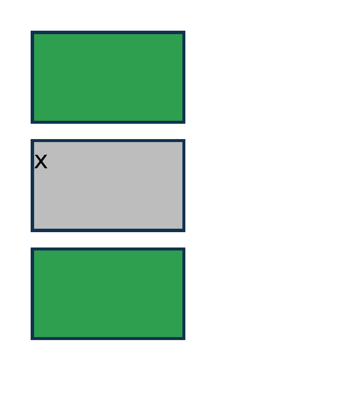
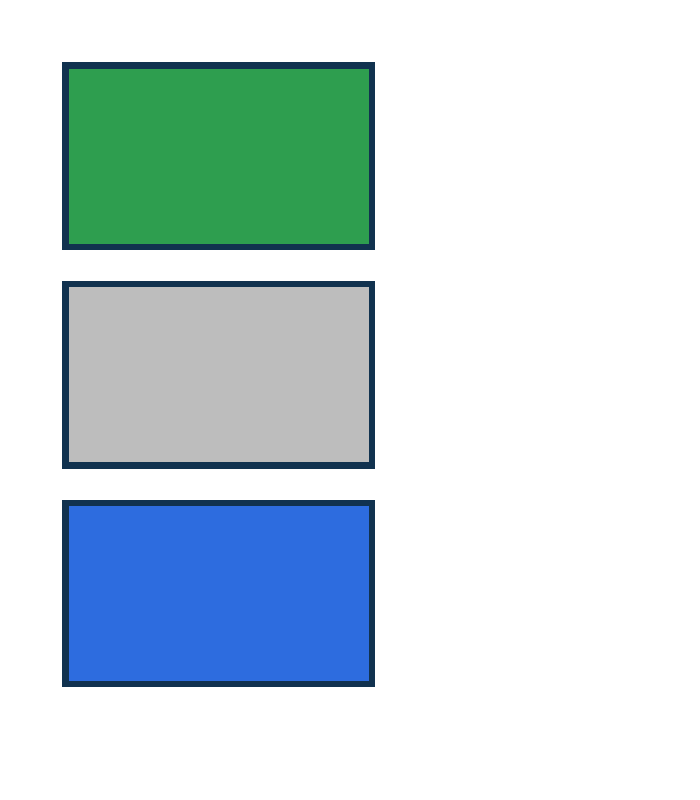
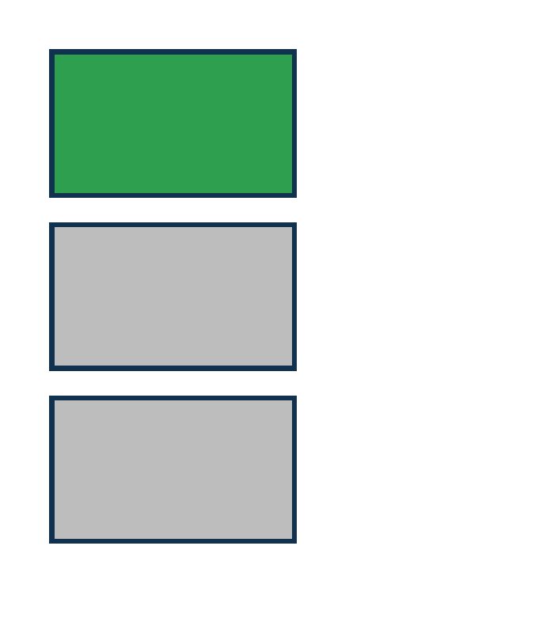
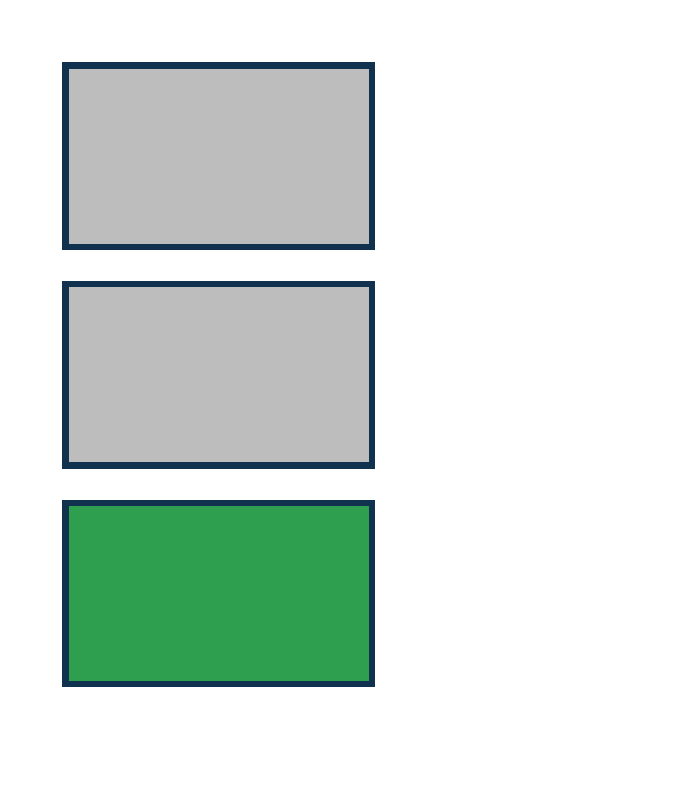
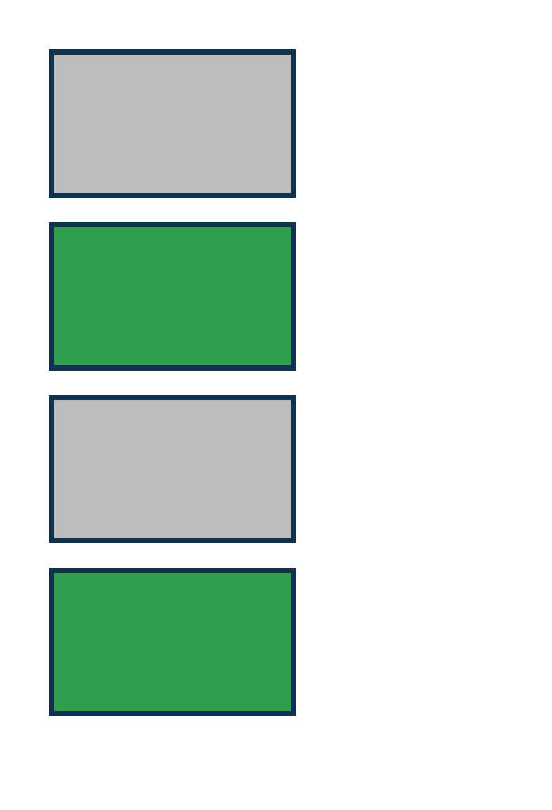
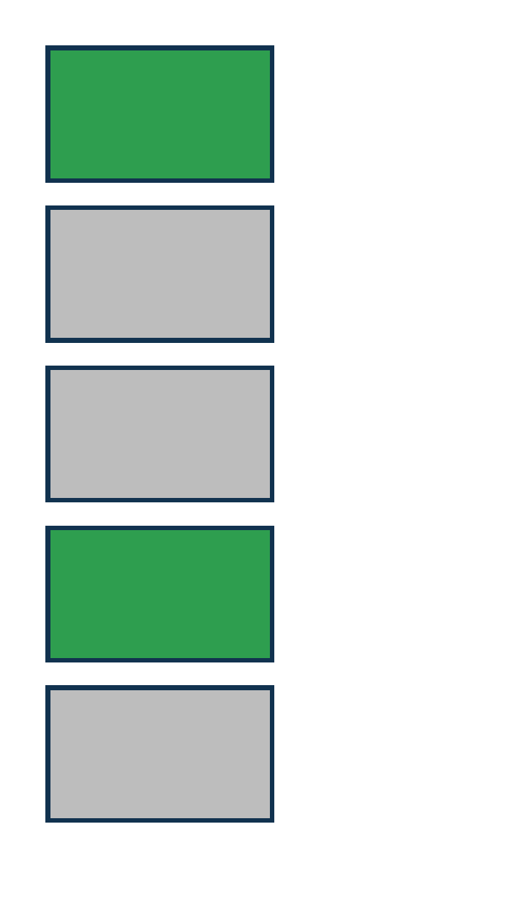
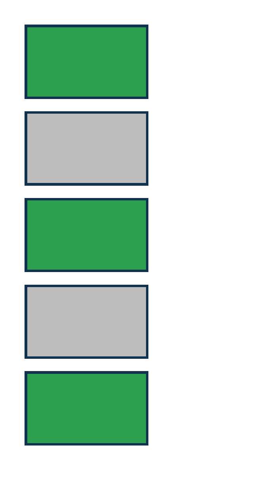
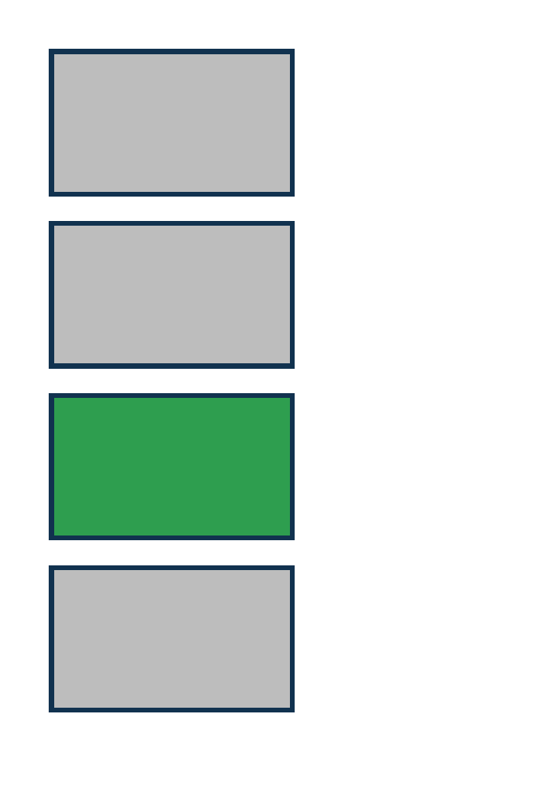
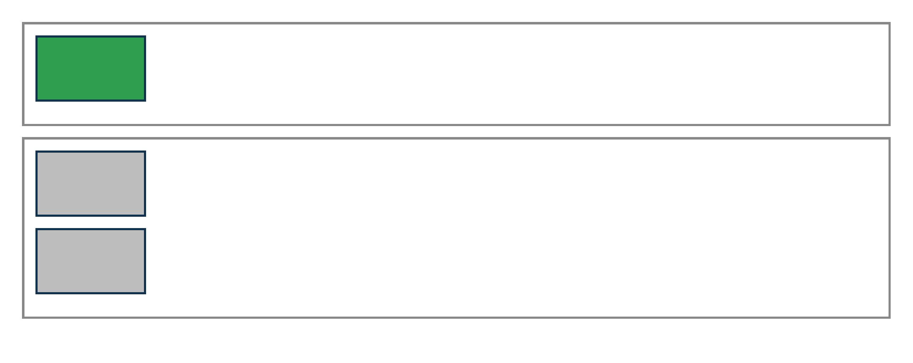

PASS exact match selectors-cascade-defined · defined
Chrome ref ironpress full-page >1.0%/channel diff :defined matches built-in HTML elements, turning the div green; catches missing Selectors Level 4 defined pseudo-class support.
PASS exact match selectors-cascade-dir-rtl · dir-rtl
Chrome ref ironpress full-page >1.0%/channel diff :dir(rtl) matches an element with static dir=rtl; catches missing direction pseudo-class support.
PASS exact match selectors-cascade-empty · empty

Chrome ref ironpress full-page >1.0%/channel diff :empty colors boxes with no children green; a box containing text stays gray.
PASS exact match selectors-cascade-first-last-child · first-child-last-child

Chrome ref ironpress full-page >1.0%/channel diff :first-child paints the first box green and :last-child paints the last box blue; the middle box stays gray.
PASS exact match selectors-cascade-first-of-type · first-of-type
Chrome ref ironpress full-page >1.0%/channel diff p:first-of-type colors the first <p> green even though a <div> precedes it.
PASS exact match selectors-cascade-has-relational · has

Chrome ref ironpress full-page >1.0%/channel diff :has(+ .flag) colors a box that is immediately followed by a .flag sibling green.
PASS exact match selectors-cascade-is-selector · is
Chrome ref ironpress full-page >1.0%/channel diff :is(.a, .c) colors boxes carrying class a OR c green; the .b box stays gray.
PASS exact match selectors-cascade-lang-inherited · lang-inherited
Chrome ref ironpress full-page >1.0%/channel diff :lang(en) matches an element inheriting the document language from html lang=en; catches checking only the element's own lang attribute.
PASS exact match selectors-cascade-last-of-type · last-of-type
Chrome ref ironpress full-page >1.0%/channel diff p:last-of-type colors the last <p> green; a trailing <div> does not affect it.
PASS exact match selectors-cascade-not-list · not-list

Chrome ref ironpress full-page >1.0%/channel diff :not(.a, .b) with a selector list colors every box except those carrying class a OR b.
PASS exact match selectors-cascade-not-negation · not-negation
Chrome ref ironpress full-page >1.0%/channel diff :not(.skip) colors every .box except the one carrying .skip; the skipped box stays gray.
PASS exact match selectors-cascade-nth-child-even · nth-child-even

Chrome ref ironpress full-page >1.0%/channel diff :nth-child(even) colors the 2nd and 4th of four boxes green.
PASS exact match selectors-cascade-nth-child-formula · nth-child-formula

Chrome ref ironpress full-page >1.0%/channel diff :nth-child(3n+1) colors the 1st and 4th of five boxes green; the others stay gray.
PASS exact match selectors-cascade-nth-child-odd · nth-child-odd
Chrome ref 
ironpress full-page >1.0%/channel diff :nth-child(odd) colors the 1st, 3rd and 5th of five boxes green; even-position boxes stay gray.
PASS exact match selectors-cascade-nth-last-child · nth-last-child
Chrome ref ironpress full-page >1.0%/channel diff :nth-last-child(2) colors the box that is 2nd from the end green (3rd of four).
PASS exact match selectors-cascade-nth-last-of-type · nth-last-of-type
Chrome ref ironpress full-page >1.0%/channel diff :nth-last-of-type(2) counts from the end among same element names, ignoring the intervening div; catches using nth-last-child or forward nth-of-type semantics.
PASS exact match selectors-cascade-nth-of-type · nth-of-type

Chrome ref ironpress full-page >1.0%/channel diff p:nth-of-type(2) colors the 2nd <p> among mixed div/p siblings green.
PASS exact match selectors-cascade-only-child · only-child

Chrome ref ironpress full-page >1.0%/channel diff :only-child colors a box green only when it is the sole child of its panel; a box with a sibling stays gray.
PASS exact match selectors-cascade-only-of-type · only-of-type
Chrome ref ironpress full-page >1.0%/channel diff p:only-of-type colors the sole <p> among <div> siblings green.
PASS exact match selectors-cascade-root-element · root
Chrome ref ironpress full-page >1.0%/channel diff :root paints the page background green behind a centered white bordered panel; if :root is unmatched the page stays white.
PASS exact match selectors-cascade-scope-root · scope-root
Chrome ref ironpress full-page >1.0%/channel diff :scope in a stylesheet matches the document scope root so :scope body .box turns the box green; catches unsupported :scope selector matching.
PASS exact match selectors-cascade-where-zero-specificity · where
Chrome ref ironpress full-page >1.0%/channel diff :where() contributes zero specificity, so a later (0,1,0) class rule wins over an earlier :where(.box) rule; the box renders green.